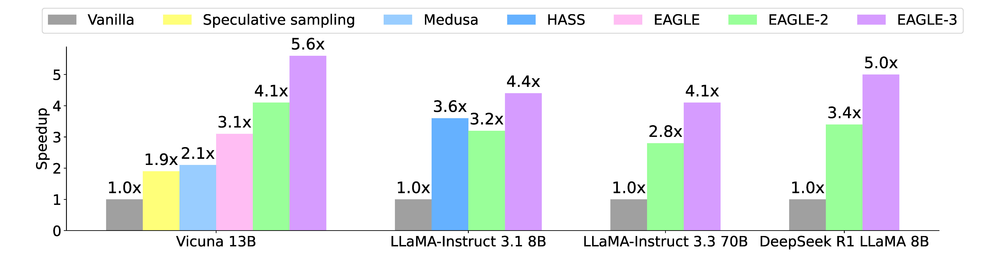

00全景与读法
DSpark 让 draft backbone 保持"一次前向并行出整块"的速度，再附加一个低秩（rank 约 256）串行 Markov 头补回块内 token 依赖，缓解并行起草器的后缀衰减（suffix decay）；同时用置信度头估计每个位置的前缀存活概率，结合引擎吞吐画像逐请求动态裁剪验证长度。关键是 Markov 头输出的仍是精确 softmax，因此验证无损。结果：接受长度宏平均超 EAGLE3 约 +27%～+31%、超 DFlash 约 +16%～+18%；DeepSeek-V4 线上 per-user 提速 +60%～85%（Flash）/ +57%～78%（Pro）；严格 SLA 下聚合吞吐增益最高 +661%（Flash 120 TPS）/ +406%（Pro 50 TPS），"推移帕累托前沿"。
每一节固定三段：朴素基线（左栏，灰：不看论文时的直觉实现）/ 它的做法（右栏，橙：DSpark 实际采取的方案）/ 差在哪（下方色块：差异、原文是否给了理由、对 RL-on-NPU 的含义）。数字按来源分三类标注：第三方 独立测量或公开论文、自报 厂商 / 作者口径、推断 本站分析。原文一手来源是开源 DeepSpec 仓库内的 DSpark_paper.pdf——注意 arXiv 2606.19348 是 DeepSeek-V4 技术报告，并非 DSpark；全部线上数字为厂商 / 媒体口径，provisional，未经独立复现。
一条贯穿全文的线索：DSpark 同时解决"起草质量"与"验证经济学"。前者由半自回归头决定块内每个位置的接受率曲线，后者由吞吐画像决定此刻核对一个 token 的代价；置信度调度把两条曲线实时对齐。对 RL：能否用于 rollout 取决于是否无损保持 per-token 概率，DSpark 的精确 softmax 验证正是这一前提。
01投机解码"无损"加速的原理
可类比听写场景：一个实习生（draft 模型，小而快）先预测接下来几个词写在草稿上，然后主编（target 模型，大而准）整体核对。主编的核对是"一次前向"并行完成的：它对草稿里每个位置同时算出"如果由自己生成，该位置应是什么分布"。关键在于核对规则——接受 / 拒绝采样（rejection sampling）：逐位置比较实习生给的概率和主编的真实概率。只要某位置主编"足够认可"，就接受；一旦在某个位置不认可，就在此处回退（rollback），丢弃其后所有草稿，改由主编直接生成一个词。数学上可证明，这样产出的每个 token 的分布与"主编独立生成"逐位等价。所以加速是无损的：节省的是主编的前向次数（一次核对通过多个 token），而不是质量。草稿准确仅节省时间，草稿错误也不会影响结果。

这张图怎么读
图中只有一个判断节点"逐位置比对是否接受"，它的两条出边决定了整个方法的性质：接受边把若干 token 追加到 prefix，拒绝边回退并让 Target 采样一个修正 token。两条边最终汇合到同一个"是否结束"节点——无论草稿被接受多少，每一轮至少产出一个由 Target 分布决定的 token，这正是无损性的图示：Target 的分布始终是最终裁决者。
加速来源在循环次数：一轮 Target 前向若通过 k 个 token，就少跑 k−1 次前向。因此后续所有机制（Markov 头、置信度调度）都作用于同一个量——每轮被接受的前缀长度，以及为得到这个长度所付出的验证算力。
朴素基线
加速自回归解码的直觉办法是让小模型直接替代大模型生成一部分 token，代价是输出质量随替代比例下降；或者接受"近似正确"的草稿以换取速度。
它的做法
第三方 投机解码的接受 / 拒绝采样在数学上保证每个 token 的分布与 Target 独立生成逐位等价；草稿只决定节省多少 Target 前向次数，不影响输出分布。DSpark 沿用这一框架，所有改动都保持在"无损"边界之内。
差在哪无损性是投机解码与"小模型替代"的根本分界，也是它能进入 RL rollout 的前提（第 12 节）。原文的两个瓶颈都发生在这一框架内部：草稿质量不足（后缀衰减）与验证算力浪费（高并发）——DSpark 的两项机制分别针对这两点，而不改变接受 / 拒绝规则本身。
02瓶颈一：后缀衰减（suffix decay）
自回归 drafter 生成草稿时逐词进行：第 3 个词能看到自己刚生成的第 1、2 个词。而并行 drafter 为了速度，一次前向同时输出一整块 5 个词——相当于 5 个位置在互不可见的条件下各自独立预测。第 1 个位置只依赖已知前缀，预测准确；但第 4、第 5 个位置本应依赖前面几个词的实际取值，并行生成时它们看不到彼此，只能独立预测。于是块内越往后，缺失的 token 间依赖越多，接受率大幅下降——这就是后缀衰减。

这张图怎么读
主链从"位置 1 接受率高"单调下降到"位置 5 最低"，终点标注"suffix decay 严重"——这是并行 drafter 的默认曲线。虚线是 DSpark 的作用：从位置 1 直接指向"位置 5 接受率被抬高"，表示串行头把前面位置的实际取值信息传递到了块尾。
读这张图时要注意它没有画出的部分：抬升的幅度。原文给出的量化只有相对基线的接受长度百分比（第 08 节：vs DFlash +16.3%～+18.4%），没有逐位置的接受率曲线。因此"更平缓"是机制上的定性结论，块尾位置具体被抬高多少不可从公开材料得知。
朴素基线
要让草稿块尾部的 token 也准确，直觉是回到自回归起草——逐 token 串行生成，每个位置都能看到前面的实际取值；代价是起草延迟随块长线性增长。
它的做法
自报 保留并行起草的一次前向，只在输出端加一个轻量串行头传递"上一个 token 是什么"的局部转移信息；块内依赖以最低成本部分补回，块尾接受率的衰减随之缓解。
差在哪后缀衰减不是某个 drafter 的实现缺陷，而是并行起草的结构性代价：一次前向意味着位置间互不可见。原文对衰减的描述是定性的，未给出并行基线在各位置的接受率数值。对 RL rollout 的含义：长 block 的接受率分布"前高后低"意味着尾部验证算力大概率浪费，缓解衰减直接提高每轮 Target 前向的有效产出。
03瓶颈二：高并发下的验证浪费
提交一个长草稿块时，前面几个 token 被接受，尾部 token 几乎必被拒绝，无谓消耗了 target 模型的验证算力。在高并发服务里，这些注定被拒的尾 token 占用了有限的 batch 容量，吞吐不升反降。传统投机解码对所有请求统一验证整块，无法感知"此刻系统是空闲还是满载"——这正是 DSpark 要解决的第二个瓶颈。
朴素基线
草稿块长度是一个全局静态超参：离线在单请求基准上扫描出最优块长，上线后对所有请求、所有负载统一使用。
它的做法
自报 把验证长度视为随负载变化的旋钮：空闲时验证更长的前缀，满载时只验证高置信度前缀，避免注定被拒的尾 token 占用 batch 容量。这是原文所称的"负载感知（load-aware）"。
差在哪这一瓶颈只在服务语境下出现：单请求 benchmark 里 batch 容量不受约束，尾 token 被拒只浪费一点算力而不影响吞吐；高并发时同样的浪费会挤占其他请求的验证位置。原文由此推出一个重要的评测判断——DSpark 的优势在单请求 benchmark 上看不出来（第 11 节）。RL rollout server 恰是"一个策略权重 + 大量并发采样请求"的形态，与该瓶颈直接对应。
04半自回归：并行 backbone + 轻量 Markov 头
DSpark 的思路是"主体保持并行，轻量头部补回依赖"。重型 draft backbone 仍然一次前向并行完成（保留速度）；但在输出端额外附加一个轻量的串行 / 马尔可夫头（低秩，rank 约 256）。该头计算开销很低，作用是把"上一个 token 是什么"这一局部转移信息注入到下一个位置——相当于在相邻位置之间传递上一 token 的取值信息。局部依赖得到补充，后缀衰减随之缓解。

这张图怎么读
三行各有三个节点，按"生成方式 → 依赖状态 → 结果"排列。对照第二列：自回归"有 token 间依赖"，并行"缺少 token 间依赖"，半自回归"轻量串行 Markov 头注入局部依赖"——第三行补回的是局部（相邻位置的转移）依赖，而非自回归的完整依赖，这是"半"字的准确含义。
对照第一列：第三行的"并行 Backbone 出块"与第二行相同，说明重型计算的形态没有改变；串行只发生在轻量头上。因此第三行的第三列"既快又缓解后缀衰减"是两个来源的叠加：速度来自第一列与第二行一致，接受率来自第二列向第一行靠拢。图中没有出现的是第五节的要点——这个串行头的输出形式仍是精确 softmax。
朴素基线
要在并行起草里补回依赖，直觉是把 drafter 改成小型自回归模型，或在块内加多轮迭代精化（扩散式），两者都让起草延迟随块长增长。
它的做法
自报 重型 backbone 一次前向不变；只在输出端串行运行一个低秩（rank 约 256）Markov 头，把上一 token 的取值信息注入下一位置。低秩设计使其在大词表下依然廉价。
差在哪半自回归的关键是把串行成本限制在输出头而非主干：主干的一次前向承担绝大部分计算，串行头只处理"上一 token → 下一 token"的转移。原文给出了 rank 约 256 这一数值，但未给出该头的具体参数量、每步延迟或 rank 的消融——复现时 rank 是必须自定或重新扫描的参数。
05"精确验证"得以保留的原因
这个 Markov 头输出的仍是标准 softmax 的逐 token 概率——每个位置有一个归一化的条件分布，正好是接受 / 拒绝采样需要的输入。对比之下：CRF-NAT 用全局配分函数（partition function）建模整块联合概率，无法得到归一化的"单 token 条件概率"，无法用于逐位置无损验证；CTC-drafter 只能贪心解码，给不出可采样的概率分布。DSpark 用一个"轻量、串行、但仍是 softmax"的头，既补充了依赖，又恰好符合无损验证可用的形式。
朴素基线
为块内连贯性建模，直觉是引入整块联合分布（CRF 类全局配分）或序列对齐目标（CTC 类）——它们在非自回归翻译等领域已有成熟做法。
它的做法
第三方 CRF-NAT 的全局配分给不出归一化的单 token 条件概率，CTC 只能贪心；两者都不满足接受 / 拒绝采样的输入形式。自报 DSpark 的 Markov 头保持逐 token 精确 softmax，无损验证的形式条件恰好成立。
差在哪这是 DSpark 能进入 DeepSeek 生产部署、保证输出分布不变的前提，也是它能用于 RL rollout 的前提。差异不在建模能力而在输出形式是否可被 rejection sampling 消费：CRF / CTC 类为块内连贯牺牲了这一形式，DSpark 以"只建模相邻转移"的较弱依赖换取形式上的兼容。对 NPU：形式上无损不等于数值上无损，第 12 节的 align-probe 要求由此而来。
06DSpark 架构：四个组件
逐组件拆解：Draft Backbone（并行）一次前向出整块草稿，给出 base softmax 概率，是速度来源，也是天然 suffix decay 的来源。Markov 输出头（低秩 rank 约 256，串行）在 base 概率之上注入"上一个 token → 下一个 token"的局部转移依赖，输出仍是逐 token 精确 softmax；低秩设计让它在大词表下依然廉价，是缓解后缀衰减、又保住无损验证的核心。Confidence 头从 base 概率估计每个位置的"前缀存活概率"，即整段草稿到该位置仍未被拒的概率。Scheduler 把每位置 survival 概率 × 引擎吞吐画像，逐请求决定验证长度（裁剪后的有效 block 长度），再把草稿块提交给 Target 做精确验证。

这张图怎么读
从"base softmax 概率"节点出发有两条分支：一条经 Markov 头得到逐 token 精确 softmax（决定草稿内容与验证用的概率），另一条经 Confidence 头得到每位置 survival 概率（决定验证多长）。两条分支在"草稿块加裁剪后长度"处合流——内容与长度是分别计算、最后合并的，这是理解"算法 × 系统"分工的关键。
再看"引擎吞吐画像"节点：它是图中唯一不从输入 prefix 派生的输入，直接进入 Scheduler。这表示验证长度不只依赖草稿本身，还依赖系统状态；同一个草稿在不同负载下会被裁成不同长度。最终所有路径汇入"Target 精确验证"——无论调度如何裁剪，验证规则不变。
| 项目 | 值 | 意义 |
|---|---|---|
| Draft backbone | 全并行（一次前向出整块） | 快，但天然 suffix decay |
| 串行输出头 | 轻量 Markov 头，低秩 rank 约 256 | 注入 intra-block 转移依赖，缓解 suffix decay；低秩使大词表下仍廉价 |
| 概率 | 逐 token 精确 softmax | 支持精确（无损）验证（区别于 CRF-NAT 全局配分、CTC 只能 greedy） |
| Confidence head | 估 per-position 前缀存活概率 | 负载感知动态验证长度 |
| 出厂配置 | DSpark-5（5-token draft block） | 线上部署所用 block 长度 |
朴素基线
一个 drafter 只有一个输出头：给出草稿 token 及其概率；块长由外部固定，验证器不需要来自 drafter 的额外信号。
它的做法
自报 在 base 概率之上并列两个头：Markov 头产出验证用的精确概率，Confidence 头产出裁剪用的存活概率；Scheduler 再引入引擎吞吐画像这一外部输入。出厂配置 DSpark-5 使用 5-token 块。
差在哪DSpark 的 drafter 多产出一个"我对自己这段草稿有多大把握"的信号，并把它交给一个知道系统负载的调度器。原文未给出 Confidence 头的训练目标细节、吞吐画像的采集方式与 Scheduler 的具体决策规则（如阈值或代价函数），这些是复现时最缺的部分。DSpark-5 是线上部署所用的块长，原文未说明其他块长下的表现。
07置信度调度：per-request 定验证长度
补回依赖后，尾 token 的接受率提升了但仍存在不确定性。DSpark 再加一个置信度头，估计每个位置的"前缀存活概率（prefix survival probability）"——即"草稿到这个位置为止整段尚未被拒"的概率。光有置信度不够，还要结合引擎吞吐画像（engine-specific throughput profile）：同样验证 5 个 token，系统空闲时和高并发满载时的边际成本差异显著。DSpark 把"再多验证一个 token 的存活收益"和"当前负载下多验证一个的吞吐代价"放在一起权衡，为每个请求动态裁剪验证长度——负载较低时延长验证长度，负载较高时仅验证高置信度前缀。验证长度不再是固定超参，而是"按存活概率 × 当前负载"实时决定的旋钮。

这张图怎么读
两个判断节点的先后顺序是这张图的信息核心：先判断系统负载，再判断存活概率。高负载分支直接走向"偏向短验证长度"，不再询问存活概率——负载是第一优先级，存活概率只在负载允许时才决定延长多少。这解释了为什么严格 SLA / 高并发下增益最大（第 09 节）：此时 MTP-1 仍在统一验证整块，而 DSpark 已系统性缩短。
低负载分支下的两个出口——"延长验证长度"与"在低风险处截断"——说明即使系统空闲，调度也不是无条件放长：存活概率低的位置仍被截断。三个出口汇入同一个"输出本请求验证长度"，强调决策粒度是逐请求，同一批次内不同请求可以有不同的验证长度。
朴素基线
验证长度等于草稿块长度，对所有请求相同；如需适应负载，只能在部署时按并发档位手工改块长。
它的做法
自报 算法侧（半自回归头）决定草稿的质量曲线——块内每个位置的接受率；系统侧（吞吐画像）决定此刻核对一个 token 的代价；调度把两条曲线实时对齐，同一模型在空闲机器与满载机器上自发选择不同验证长度，在整个负载范围上推动帕累托前沿。
差在哪原文的表述是：脱离系统负载谈草稿长度，或脱离草稿质量谈调度，都只能得到局部最优；两者咬合才有跨并发区间的稳定吞吐增益。本站判断这是 DSpark 相对全表其他方法唯一在类别上不同的能力（第 11 节的 load-aware 列），但其增益只在服务级测量中可见——单请求 benchmark 上调度几乎不起作用。
08效果一：接受长度（offline，macro-avg）
以下数据为 paper / vendor 公布的 provisional（暂定）数字，来源为 DSpark 论文（DeepSpec 仓库内 DSpark_paper.pdf）及多家技术媒体转述。凡未在公开来源中找到的细分数字，均标注"未公布"。Target 模型为 Qwen3 系列三档，下表为相对两类基线 drafter 的平均接受长度提升。
| Target 模型 | vs Eagle3（自回归 drafter） | vs DFlash（并行 block drafter） |
|---|---|---|
| Qwen3-4B | +30.9% | +16.3% |
| Qwen3-8B | +26.7% | +18.4% |
| Qwen3-14B | +30.0% | +18.3% |
| Macro-avg 区间 | +26.7%～+30.9% | +16.3%～+18.4% |
朴素基线
半自回归应当落在自回归与并行之间：接受长度低于 EAGLE3（完整依赖），高于 DFlash（无依赖）。
它的做法
自报 三档 Qwen3 上同时超过两者：超 EAGLE3 +26.7%～+30.9%，超 DFlash +16.3%～+18.4%。相对 EAGLE3 的领先幅度大于相对 DFlash，说明并行 backbone 的容量优势与 Markov 头的依赖补偿是叠加的。
差在哪"半自回归接受长度反超自回归"与直觉基线相反，原文未解释其来源（本站推断为 backbone 可用更强的并行结构，而非串行头本身更准）。没有绝对 token 值意味着无法与谱系表里 EAGLE3 的约 4.5～5 接受长度直接换算；三档模型上的百分比一致性（+27%～+31%、+16%～+18%）是目前最可信的信号。
09效果二：线上单用户提速与严格 SLA 吞吐
基线为生产 MTP-1（Multi-Token-Prediction，1 token）。在保持聚合吞吐相同（matched aggregate throughput）的前提下，DeepSeek-V4 线上单用户生成速度的提升：V4-Flash +60%～+85%，V4-Pro +57%～+78%。在固定单用户速度下限（SLA）时比较聚合吞吐：SLA 越严格，MTP-1 越接近其运行边界（只能维持很小的并发 batch），DSpark 的相对优势越显著。
| 模型 | SLA（tok/s/user） | DSpark 聚合吞吐 vs MTP-1 |
|---|---|---|
| V4-Flash | 80 TPS（中等 SLA） | +51% |
| V4-Flash | 120 TPS（严格 SLA） | +661%（nominal） |
| V4-Pro | 35 TPS（中等 SLA） | +52% |
| V4-Pro | 50 TPS（严格 SLA） | +406%（nominal） |
| 并发 / SLA 区段 | 吞吐增益量级 | 解读 |
|---|---|---|
| 中等 SLA / 中等并发 | 约 +51%～+52% | MTP-1 仍有余量，DSpark 靠更长接受长度稳定多出约一半吞吐 |
| 严格 SLA / 高并发边界 | 趋向 +400%（乃至 +406% / +661% nominal） | MTP-1 逼近运行边界、只能维持极小 batch；DSpark 按负载裁剪验证长度，避免在高拒绝风险 token 上浪费 batch 容量，相对增益放大数倍 |
朴素基线
投机解码论文通常相对 vanilla 自回归解码报告单请求加速比（6～9×），在低并发、无 SLA 约束的条件下测量。
它的做法
自报 直接对生产环境已较强的 MTP-1 报告 per-user +57%～85%，并强调匹配聚合吞吐；再以四个 SLA 锚点给出聚合吞吐增益，严格 SLA 行达 +661% / +406%（nominal）。这是部署语义而非 demo 语义。
差在哪两组数字回答不同的问题：per-user 提速回答"同样吞吐下用户感受快多少"，SLA 吞吐回答"同样用户体验下能服务多少并发"。+661% / +406% 是 nominal 值，且发生在 MTP-1 逼近运行边界的区段——分母极小时相对增益必然放大，应与 +51%～+52% 的中等区段一起读。全部为厂商 / 媒体口径，未经独立复现。
10开源 DeepSpec：全栈 speculative decoding
DSpark 随 deepseek-ai/DeepSpec 开源，MIT 许可。定位为全栈：数据准备工具 + draft 模型实现 + 训练代码 + 评测脚本。
| 项目 | 内容 |
|---|---|
| 仓库 | deepseek-ai/DeepSpec（GitHub），MIT 许可 |
| 定位 | 全栈：数据准备工具 + draft 模型实现 + 训练代码 + 评测脚本 |
| 打包的 3 个 drafter | DSpark、DFlash（并行 block）、Eagle3（自回归） |
| Target 模型（4 个） | Qwen3-4B、Qwen3-8B、Qwen3-14B、google/gemma-4-12B-it |
| 释出 checkpoint | 12 个（3 drafter × 4 target），托管于 Hugging Face |
| 9 个 benchmark | GSM8K、MATH500、AIME25、HumanEval、MBPP、LiveCodeBench、MT-Bench、Alpaca、Arena-Hard-v2 |
| 硬件假设 | 默认脚本假定单节点 8 GPU |
| 数据准备开销 | 仅 Qwen3-4B target cache 约 38 TB |
朴素基线
投机解码方法的开源通常只放出 drafter 权重与推理代码，训练数据管线与对照基线由使用者自行搭建，导致跨方法对照难以对齐。
它的做法
自报 同一仓库内打包 DSpark、DFlash、Eagle3 三个 drafter 与 4 个 target 的 12 个 checkpoint，共用一套数据准备与评测脚本；第 08 节的对照数字即在此栈内产生。代价是 target cache 体量巨大（Qwen3-4B 约 38 TB）。
差在哪DeepSpec 的价值在于把三个 drafter 放在同一 harness 下对照，这使第 08 节的百分比比跨论文引用的头条加速比更可比。但两个限制需注意：默认假定单节点 8 GPU、无 NPU 路径；38 TB 的 target cache 使复现门槛主要在存储而非算力。推断 对 NPU 复现，数据管线可复用，drafter 训练与验证 kernel 需另行适配。
11在投机解码谱系里的位置
投机解码的核心矛盾是起草便宜 vs 验证接受率高这对张力，演进可分三代：自回归起草器（EAGLE / MTP，依赖完整但起草慢）、并行 / 扩散块起草器（DFlash / PARD / DART，快但 suffix decay）、半自回归 + 负载感知调度（DSpark 所在层）。DSpark 不是"又一个更快的起草器"，而是把起草质量与验证经济学合并解决，面向高并发线上服务的吞吐 / SLA 取舍。

这张图怎么读
这张图展示的是 DSpark 的对照基线所在的口径：相对 vanilla 自回归的单请求加速比。同一 EAGLE-3 在四个目标模型上从 4.1× 到 5.6× 不等，说明加速比对目标模型与任务分布敏感——这正是原文谱系表中"头条加速"一列不可横向比较的原因。
与 DSpark 的报告方式对照最有价值：DSpark 不报告相对 vanilla 的倍数，而是相对 EAGLE3 的接受长度百分比（+26.7%～+30.9%）与相对生产 MTP-1 的 per-user 提速。把这张图的 EAGLE-3 柱当作分母，才能理解 DSpark 数字的量级——它是在一个已经 4～5× 的基线之上再报增量，而非另起一个 6～9× 的头条数字。图中数字为 EAGLE 作者自报。
数字标注：✅ 已核实（公开论文 / 官方）· ⚠️ provisional（厂商 / 媒体，未独立复现）。
| 方法 | 起草器类型 | token 间依赖 | 验证方式 | load-aware 调度 | 头条加速 / 接受长度 | 备注 |
|---|---|---|---|---|---|---|
| EAGLE / EAGLE3 | 自回归 | ✅ 完整（串行） | 精确树验证（无损） | ❌ | ✅ 3.0–6.5×；接受长度约 4.5–5（Llama-3.1-8B） | NeurIPS'25；须为每个目标模型单训草稿头 |
| MTP / MTP-1 | 自回归（1 层 MTP 头） | ✅（串行） | 精确并行验证（无损） | ❌ | ⚠️ 约 1.8× TPS；第二 token 接受率约 80–90% | DeepSeek-V3 原生；DSpark 的生产对照基线 |
| DFlash | 并行-扩散块 | ❌（块内独立） | 精确（无损，单轨迹） | ❌ | ⚠️ >6×；比 EAGLE3 高至 2.5× | 每层注入目标 KV / context；单轮只验一条轨迹 |
| PARD | 并行（Parallel Mask Predict） | ❌ | 精确 / 贪心（无损适配） | ❌ | ⚠️ 峰值 5.38×；+1.78× vs vanilla SD；Qwen2.5-7B 约 381 tok/s（A100） | target-independent，适配成本低 |
| DART | 并行-扩散 + 树剪枝 | ⚠️ 弱（N-gram 强制连续） | 树（无损） | ❌ | ⚠️ 2.03–3.44× wall-clock；平均超 EAGLE3 约 30% | 扩散启发；树剪枝补块内连贯 |
| DDTree | 并行-扩散块 → 草稿树 | ❌（靠树挽回） | 树（祖先掩码，单前向，无损） | ❌ | ⚠️ 在 DFlash 上再提升，Qwen3-Coder-30B 至 8.22× | 单轨迹扩成多续写树；best-first heap 选树 |
| JetSpec | 并行-树（causal parallel tree） | ✅（分支级 causal） | 树（与目标 AR 对齐） | ❌ | ⚠️ MATH-500 至 9.64×、对话 4.58×；接受长度至约 10×；1000+ tok/s（B200） | 一次前向出整棵树 + 块级 causal attention |
| DSpark（DSpark-5） | 半自回归（并行 backbone + 低秩串行 Markov 头，rank 约 256） | ✅（轻量串行头注入块内局部转移） | 精确 softmax 验证 | ✅（置信度头 × 引擎吞吐画像，逐请求裁剪） | ⚠️ 接受长度超 EAGLE3 +30.9 / 26.7 / 30.0%、超 DFlash +16.3 / 18.4 / 18.3%；V4 线上 per-user +60–85%（Flash）/ +57–78%（Pro） | DeepSeek-V4 线上 vs MTP-1；严格 SLA 下推移 Pareto 前沿；开源 DeepSpec |
朴素基线
按头条加速比给方法排序：JetSpec 9.64×、DDTree 8.22×、DFlash >6× 在前，DSpark 的 +57%～85% 看起来最小。
它的做法
推断 原文归纳 DSpark 的新颖之处：vs EAGLE3 / MTP——重型 backbone 完全并行，只用低秩串行头补依赖，拿到接近自回归的接受率却保留并行起草速度；vs DFlash / PARD——直接缓解衰减而非靠树搜索绕过；vs DART / CRF-NAT / CTC——每 token 仍是精确 softmax；vs DDTree / JetSpec——树方法在固定块长下扩展宽度（空间维度），DSpark 动态调整块长（时间与负载维度），二者可叠加；load-aware 调度是全表唯一。
差在哪表中只有 DSpark 的 load-aware 列为 ✅，其余方法验证长度都是静态超参——这是它在严格 SLA 下推移 Pareto 前沿、且单请求 benchmark 看不出来的优势来源。评测对照也务实：其他方法相对 vanilla AR 报告 6–9×，DSpark 直接对生产环境已较强的 MTP-1 报告 +57–85% per-user 且匹配聚合吞吐。本站判断：树方法（空间）与 DSpark（时间 / 负载）正交，可叠加是原文明确的结论，但尚无叠加实验。
12对 RL-on-NPU 的意义
Rollout 是 decode-heavy 的。RLHF / RLVR 训练里绝大部分算力花在 rollout（从策略模型采样长序列），而采样就是逐 token 的 decode——memory-bandwidth bound、算力利用率极低，恰是投机解码的主场。给 rollout 提速近似等于直接给整个 RL 训练循环提速。接受长度（每次 target 前向额外产出的 token 数）每提升一档，rollout 的 wall-clock 近似线性缩短；DSpark 缓解 suffix decay 意味着 block 尾部 token 也更可能被接受，长 block 的接受率分布不再前高后低。
高并发服务 = RL rollout server。rollout 引擎同样是"一个策略权重 + 大量并发采样请求"。DSpark 这种负载感知、按并发裁剪验证长度的调度，直接对应 rollout server 在 batch 容量约束下最大化有效 token 产出——RL rollout 往往落在增益曲线的陡峭段，理论上可获得接近上限的收益。
NPU 上必须保 per-token 概率一致（align-probe）。RL 的梯度依赖采样分布与计分分布严格一致（importance ratio、KL 约束、on-policy 假设都建立在此之上）。若起草器 / 验证改变了输出分布，采样到的 token 概率就和训练时算的不匹配，RL 会拿到有偏的 advantage，训练发散或被悄悄拉偏。DSpark 坚持精确 softmax + 精确无损验证在 NPU 场景尤为关键：NPU 的算子 / 量化路径本就易引入数值漂移，需要 align-probe（逐 token 对齐探针）校验起草、验证、训练三条路径的概率一致性。只有 DSpark / EAGLE / DFlash 这类可证明无损的方案能安全用于 RL rollout；贪心-only（CTC）或近似配分（CRF-NAT）会破坏 on-policy 一致性，不适合直接喂给 RL。
朴素基线
把投机解码视为服务侧的延迟优化，与训练无关；rollout 加速依赖更多 NPU 卡或更高的 batch。
它的做法
推断 rollout 与线上服务在负载形态上同构（一个权重 + 大量并发采样），DSpark 的两项机制都直接映射：接受长度提升缩短 wall-clock，负载感知调度在 batch 容量约束下最大化有效 token；前提是逐 token 概率在起草、验证、训练三条路径上一致，NPU 上需 align-probe 校验。
差在哪原文的一句话概括：投机解码把 RL 最贵的 decode-heavy rollout 提速，而能不能用取决于它是否无损保持 per-token 概率——DSpark 同时满足"快"（半自回归 + 负载感知调度）和"概率一致"（精确 softmax 验证）两个条件，因此既适合高并发线上服务，也适合 NPU 上的 RL rollout。本站补充两点限定：DeepSpec 默认为单节点 8 GPU、无 NPU 路径；"RL rollout 落在增益曲线陡峭段"是推断，尚无 rollout 场景的实测。
13总表：朴素基线 vs 它的做法
| 主题 | 朴素基线 | 它的做法 · 差在哪 |
|---|---|---|
| 无损框架 | 小模型替代或接受近似草稿 | 接受 / 拒绝采样逐位等价 Target 分布；DSpark 全部改动在无损边界内 |
| 后缀衰减 | 回到自回归起草 | 并行主干不变，串行头只传相邻转移信息。未给逐位置接受率曲线 |
| 验证浪费 | 块长为全局静态超参 | 验证长度随负载变化；单请求 benchmark 看不出该优势 |
| 半自回归 | 小型自回归 drafter 或扩散迭代 | 并行 backbone + 低秩（rank 约 256）Markov 头。未给参数量、延迟与 rank 消融 |
| 精确验证 | CRF 全局配分或 CTC 对齐 | 逐 token 精确 softmax，形式上可被 rejection sampling 消费；数值一致性另需校验 |
| 架构 | 单输出头，块长外部固定 | Markov 头 + Confidence 头 + Scheduler（引擎吞吐画像）。调度规则、画像采集未给 |
| 置信度调度 | 按并发档位手工改块长 | 存活概率 × 负载逐请求裁剪；负载优先于存活概率 |
| 接受长度 | 应介于 EAGLE3 与 DFlash 之间 | 同时超过两者：+26.7%～+30.9% / +16.3%～+18.4%（Qwen3 三档，自报）。无绝对 token 值 |
| 线上效果 | 相对 vanilla 报 6～9× | 相对 MTP-1 per-user +57%～85%（matched throughput）；严格 SLA +661% / +406% nominal，需与 +51%～52% 同读 |
| 开源 | 只放 drafter 权重 | DeepSpec 全栈、3 drafter × 4 target 12 个 checkpoint、9 benchmark；38 TB cache、单节点 8 GPU |
| 谱系位置 | 按头条加速比排序 | 唯一 load-aware；与树方法正交可叠加；对生产基线报增量 |
| RL-on-NPU | 投机解码与训练无关 | rollout 同构于高并发服务；无损保概率是进入 RL 的门槛；NPU 需 align-probe |
14原文没给的东西
以下是复现或独立评估时必须自行确定、原文未提供理由或未经独立复现的内容——引用时应保留限定语：
- 逐 benchmark 的接受长度绝对值：9 项 benchmark（GSM8K / MATH500 / AIME25 / HumanEval / MBPP / LiveCodeBench / MT-Bench / Alpaca / Arena-Hard-v2）的逐项接受长度与绝对 token 值均未公布，公开来源只给相对百分比与区间；
- gemma-4-12B-it 的细分数字：作为第四个 target 系列，其相对 Eagle3 / DFlash 的接受长度未公布；
- 逐并发档位的 TPS–延迟曲线：batch=8/16/32… 各点的精确加速比未公布，公开材料只给 4 个 SLA 锚点（Flash 80 / 120 TPS，Pro 35 / 50 TPS）；
- Markov 头的参数量与延迟：仅给 rank 约 256，无 rank 消融；
- Confidence 头的训练目标、引擎吞吐画像的采集方式与 Scheduler 的决策规则：原文以定性描述给出，无阈值或代价函数；
- "半自回归接受长度反超自回归"的原因：原文未解释，本站推断为 backbone 结构容量所致；
- 与树方法（DDTree / JetSpec）叠加的实验：原文称二者正交可叠加，无数据；
- RL rollout 场景的实测：第 12 节全部为推断，无 rollout 吞吐或训练稳定性数据；DeepSpec 无 NPU 路径；
- 线上数字的独立复现：per-user +60%～85% / +57%～78% 与 SLA 吞吐增益均为厂商 / 媒体口径；
- 本文原图受限于网络代理可达性，取自 GitHub 托管的 EAGLE 仓库 README；DSpark 论文（DeepSpec 仓库内 PDF）与媒体解析的配图未能获取，DSpark 本身的机制图全部为本站图。
15可搬走的判断与后续关注
一、判断一个投机解码方案能否进入 RL rollout，先看输出形式再看加速比。逐 token 精确 softmax 是 rejection sampling 无损的形式条件；CRF 配分与 CTC 贪心即使块内更连贯也不满足。DSpark / EAGLE / DFlash 可证明无损，其余需逐一核对。
二、验证长度应当是负载的函数，而非全局超参。高并发下注定被拒的尾 token 挤占的是其他请求的 batch 容量；DSpark 是全表唯一把系统负载喂进验证决策的方案，其增益随 SLA 收紧而放大（+51% → +661% nominal）。rollout server 是同一形态的负载。
三、读 DSpark 的数字要带分母。它相对的是已经 4～5× 的 EAGLE3 与生产 MTP-1，而非 vanilla；+661% / +406% 发生在 MTP-1 逼近运行边界的区段，应与中等 SLA 的 +51%～52% 同读。全部为 provisional。
DSpark 论文表格的逐项数字（DeepSpec 仓库内 DSpark_paper.pdf 的 Table 1）与第三方复现 · DeepSpec 在 NPU 上的 drafter 训练与验证 kernel 适配，以及 align-probe 下起草 / 验证 / 训练三条路径的概率一致性 · DSpark 与树方法（DDTree / JetSpec）的叠加实验 · RL rollout 场景的实测：接受长度提升是否按预期近似线性缩短 wall-clock、负载感知调度在 rollout server 上的增益区段。